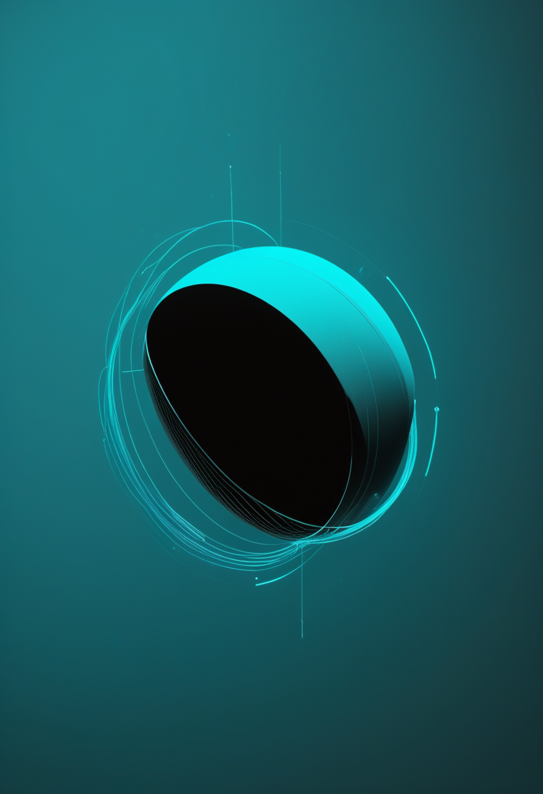
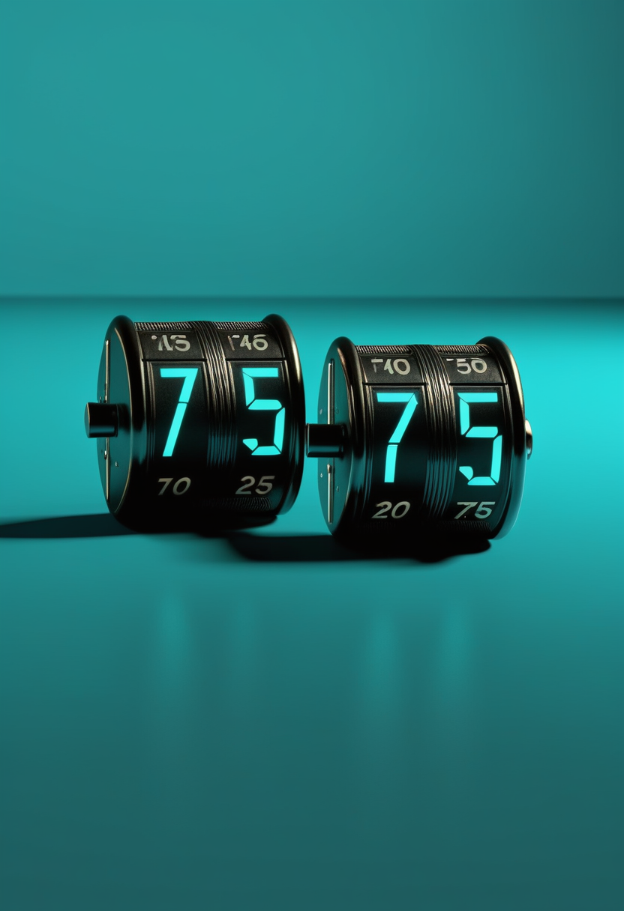
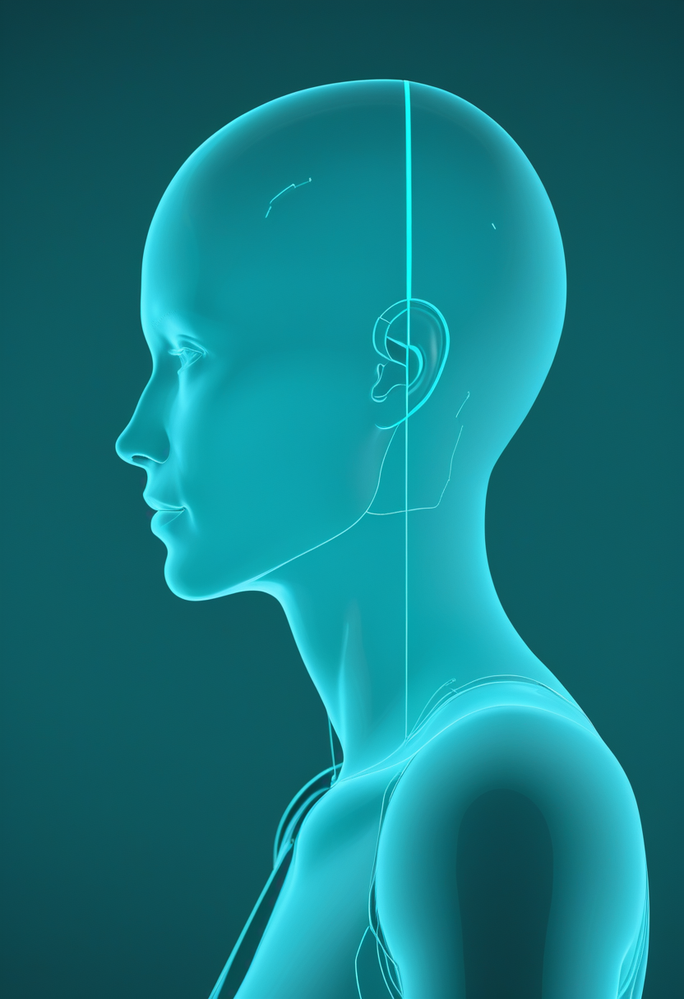

木曜日の便り。中外製薬は9月28日、自社創製の抗ミオスタチン抗体emugrobart(GYM329)について、ロシュが肥満症の臨床開発を中止し同薬の開発を終えると発表した。全ライセンス権は中外に返還され、ロシュが今春すでに開発を止めていた脊髄性筋萎縮症(SMA)で、中外が第3相を視野に開発再開の準備を始めている。9月に米国で承認されたISEMBYLD(アピテグロマブ)に続き、「筋肉を直接守る」薬の候補が日本企業の手で再び動き出した。エボラは確定8,116例・死亡3,924人(前号比+49例・+23人)で北キブの致死率は約59%、米国の麻疹は連邦の死者集計が2人に、ペンシルベニア州は単独で5人目の死者を数えるに至った。自由の章は中国発の「植え込み型×AI創作」BCIと重さ3グラムの非侵襲BCIが同じ日に発表されたことを、畏敬の章は中欧の衛星SMILEの最初の科学画像と木星探査機Juiceの地球スイングバイ、CERNの磁石28基取り外しを、美の章は重症患者の『デジタルの分身』を作るUVMの5年計画と、AI意識をめぐる議論の重心の移り変わりを届ける。
中外製薬は9月28日、自社が創製した潜在型ミオスタチンスイーピング抗体emugrobart(開発コードGYM329)について、ロシュが肥満症を対象とした臨床開発を中止し、同薬の開発を終了すると発表した。肥満症の第2相GYMINDA試験(GLP-1/GIP受容体作動薬との併用)の中間解析などから、事前に定めた「臨床的に意味のある体重減少」の達成は難しいと判断された。これに伴い全ライセンス権が中外製薬に返還され、中外は導出も視野にSMAでの開発再開に向けた準備を始めた。ロシュは2026年3月にSMAとFSHD(顔面肩甲上腕型筋ジストロフィー)での開発をすでに中止していたが、中外は皮下投与であること、安全性、薬力学、長期データを含む臨床シグナル、第3相試験デザインの改良を踏まえ、SMAで第3相を行う機会があると判断した。9月に米国で承認されたISEMBYLD(アピテグロマブ)に続く「筋肉を直接守る」薬の候補が、日本企業の手で再び動き出す。
中外製薬は9月28日、自社創製の潜在型ミオスタチンスイーピング抗体emugrobart(GYM329)について、ロシュが肥満症の第2相GYMINDA試験(GLP-1/GIP受容体作動薬との併用)の中間解析で目標の体重減少に届かない見込みと判断し、同薬の開発から撤退すると発表した。全ライセンス権は中外製薬に返還される。ロシュは2026年3月にSMAとFSHD(顔面肩甲上腕型筋ジストロフィー)での開発をすでに中止していたが、中外は皮下投与であること、安全性・薬力学・長期データを含む臨床シグナル、第3相試験デザインの改良を踏まえ、SMAで第3相を行う機会があると判断し、他社への導出も視野に開発再開の準備を始めた。ミオスタチンを抑えるアプローチは、米国で9月に承認されたISEMBYLD(点滴)と同じ系統で、皮下注射の選択肢が加われば通院の負担を減らせる可能性がある。
ロシュ・ダイアグノスティックス傘下の独TIB MOLBIOLは9月30日、SMA、重症複合免疫不全症(SCID)、鎌状赤血球症の3つを1回の検査で同時に調べる新生児スクリーニング用キット「LightMix Newborn TREC/SMN1/HBB」を、CEマークを受け入れる国々で発売した。欧州の体外診断用医療機器規則(IVDR)に適合し、既存のLightCyclerシステムで動くため、大学病院や民間病院の検査室が今の手順に組み込みやすい。一次スクリーニングとして陽性を拾い、すぐに確定検査と治療につなげる用途で、同社CEOは「SMAやSCIDをもって生まれた赤ちゃんには1日1日が大切だ」と述べた。日本でもSMA・SCIDの新生児スクリーニング実証事業が続いており、検査の選択肢が増えることは全国での定着を後押しする。
SMAの治療は「守る・見つける」の両輪がそろいつつある。ミオスタチンを狙う薬はロシュの撤退と中外の再起という巡り合わせを経て日本発で再び動き出し、診断側は1回の採血で3疾患を同時に拾う新しい検査が実用化された。広島の世界筋学会は10月3日まで続く。

上海の脳虎科技(NeuroXess)は9月30日、全植入・全無線・全機能の「三全」BCIシステムの臨床での最新の取り組みを公表した。2021年の事故で第4頸髄(C4)を損傷した高位の四肢まひの受試者は、今年4月にこのシステムを植え込んだ。創作の場面では脳の信号でスケッチや指示文(プロンプト)を入力し、AI大規模モデルがデザインと3次元モデルを生成、3Dプリンターで実物の作品にした。生活の場面では、AIスマートグラスのカメラが周囲の機器を見分け、本人が確かめた意図に従ってベッドや照明を操作した。BCIを「カーソル操作」から「AIに意図を伝える入口」へ広げる試みといえる。
天津大学の脳機交互・人機共融海河実験室は9月30日、企業と共同で非侵襲の超小型BCI一体型システム「神工・須弥・脳立方」を天津で発表した。重さ3グラム、体積2立方センチメートルで、電極・回路・電池・無線通信をまとめて頭皮に固定し、髪の中に隠れる。サンプリング周波数1,000Hzで8〜10時間動き、医用電気機器の国家規格GB 9706.226-2021の要件を満たすという。医療・消費・産業での利用を想定しており、中国工業情報化部が8月に公表した「国家BCI産業標準体系建設指南(2026版)」の意見募集(9月23日締め切り)とあわせ、製品の小型化と標準づくりが並行して進む。
中国では同じ日に「植え込み型×AI創作」と「超小型の非侵襲型」の両方が発表され、BCIの応用の幅が一気に広がっている。視線入力は今回も直近1〜2週の新規一次情報を取得できなかった。
欧州疾病予防管理センター(ECDC)の要約によると、コンゴ民主共和国(DRC)は9月28日時点の報告で、ブンディブギョ型エボラの累計を確定8,116例・死亡3,924人とした(データの締め日は要確認)。前号で伝えた8,067例・3,901人からは確定+49例・死亡+23人で、新規例はイトゥリ州27例、北キブ州18例、オーウエレ州4例。州別の累計はイトゥリ6,182例・2,848人、北キブ1,541例・914人で、北キブの致死率は約59%(本紙計算)と全国平均(約48%)を大きく上回る。回復者は2,088人。隣国ウガンダでも2人が死亡している。WHOは5月からこの流行を「国際的に懸念される公衆衛生上の緊急事態(PHEIC)」としている。

米疾病対策センター(CDC)は9月29日、2026年の全米の麻疹による死者数を2人に更新した。CDCは全国の麻疹死亡数を、州の衛生当局の報告ではなく国立衛生統計センター(NCHS)の死亡統計に基づいて数える方式に切り替えており、ある州から新たな死亡の届けがあったことで1人から2人になった。一方、ペンシルベニア州はこの時点で州内4人の死亡を発表しており、CDCの集計は死亡の場所や時期を示していないため、同州の例が含まれるかは分からない。全米の感染者はCDC集計で3,659例(9月24日時点)で、2000年の排除宣言以降で最多。感染者の95%はワクチン未接種か接種歴不明だった。連邦と州の数字のずれは政治的な論点にもなっている。
ペンシルベニア州保健局は9月30日、ランカスター郡のワクチン未接種の住民が麻疹に感染して亡くなったと発表した。州内の麻疹関連死は8月以降で5人目で、ランカスター郡では3人目(乳児2人を含む)。ほかにミフリン郡の18歳、ジェファーソン郡の40歳女性が亡くなっている。最新の州集計では確定943例・39郡に広がり、日曜以降の新規は40例、入院は累計176人。ワクチン接種済みの感染者は4例(1%未満)にとどまる。
エボラは1日あたりの増加がやや落ち着いたように見えるが、北キブの高い致死率と病床不足は続く。米国の麻疹は「死者数の数え方」をめぐって連邦と州が食い違い、公衆衛生データへの信頼そのものが問われている。
欧州宇宙機関(ESA)と中国科学院が共同開発した衛星SMILE(太陽風・磁気圏・電離圏リンク探査機)は科学運用に入り、9月30日に最初の科学画像とデータを公開した。北極上空のオーロラを長時間連続で丸ごと撮った初の全景画像で細かな構造をとらえたほか、約16万光年先の超新星残骸の輝きや、地球の非常に高い軌道での磁場とイオンの初の高分解能測定も示した。SMILEは5月19日に仏領ギアナから打ち上げられ、6月20日に観測軌道に到着、9月23日に科学運用の準備完了が宣言された。宇宙から磁気圏の境界を「見える化」する世界初の軟X線撮像装置を積んでいる。
ESAの木星氷衛星探査機Juiceは9月28日、地球の重力を使って軌道を変えるスイングバイを行った。最接近は中央ヨーロッパ夏時間13時45分(日本時間20時45分)、インド洋上空で、地球から8,640kmまで近づいた。これで進路は飛行前に比べ20度曲がり、次は2029年1月の最後の地球スイングバイを経て、2031年7月に木星に到着する予定。通過後には監視カメラでアフリカやマダガスカル、アラビア半島南部を撮影した。
欧州合同原子核研究機関(CERN)は、大型ハドロン衝突型加速器(LHC)の高輝度化(HL-LHC)に向け、9月7日からATLAS・CMS両検出器の両側の区間を分解し、超伝導磁石28基を取り外して交換する作業を進めている。新しい磁石は約40%強い磁場を生み、衝突前の粒子ビームをより細く絞れるため、衝突の頻度が大きく上がる。ドイツの電子シンクロトロン研究所(DESY)では、ATLASの新しい内部飛跡検出器(ITk)の部品「ペタル」9枚の組み込みが9月14〜28日に行われた。
SMILEは中国と欧州が共同で作った本格的な宇宙科学ミッションで、宇宙天気の予測に直結する。Crew-13は日本時間10月2日未明の打ち上げを目前に控え、LHCは高輝度化に向けた本格工事の段階に入った。量子分野は直近の大型一次発表を確認できなかった。

米バーモント大学(UVM)は9月30日、米保健高等研究計画局(ARPA-H)から最大3,800万ドルの契約を受け、重症患者の「医療デジタルツイン」を作る5年計画「ReSCUED」を始めると発表した。同大史上最大の助成で、研究代表者はゲイリー・アン博士。頻回の採血と生体モニタリングで患者の免疫・炎症の状態を測り、その人専用の数理モデル(デジタルツイン)の上で、FDA承認済みの薬の使い方を投与前に試す。成功すればICUの滞在日数を25%減らせるとみている。ウェイクフォレスト大、アラバマ大バーミングハム校、ワシントン大(セントルイス)の3施設から患者データを集める。ARPA-Hの重症疾患プログラム「CIRCLE」の一環で、脳全体の写し取りはまだ遠いが、「人の体の一部を写して先回りする」技術は臨床に入り始めた。
イタリア・パレルモ大学のアントニオ・キエッラ(Antonio Chella)氏は、Frontiers in Psychology(17巻、論文番号1903644)に論考「Sentient AI in robots and agents: prolegomena for an evidence-based research program」を発表した(公開日は検索上9月29日、要確認)。大規模言語モデルやロボットが一人称で語り、道具を使い、社会的な場に参加するようになった今、感覚を持つAIの問題は思弁から実務的な学際課題に移ったと指摘。「このAIは感覚を持つか」という問いは粗すぎるとして、「特定のシステムが特定の意識を持つという確信を、どんな証拠が合理的に高めたり下げたりするか」を問うべきだと提案し、そのための概念・方法・倫理の前提条件を整理した。AI意識をめぐる議論は、企業間の路線対立に加え、学術側でも判定の手順づくりから詰めようとする流れが続いている。
「デジタルの分身」は、脳のエミュレーションのような長期目標と、ICUの治療計画のような実用の両面で進む。AI意識の議論は「ある・ない」の主張合戦から「何を証拠とするか」の設計へと、少しずつ重心を移している。
木曜日の便り。中外製薬が明らかにしたGYM329(emugrobart)のSMA開発再開は、ロシュの撤退という区切りのあとに日本企業の手で再び灯った一つの光である。エボラは確定8,116例・死亡3,924人、米国の麻疹は連邦の死者集計が2人、ペンシルベニア州は単独で5人目を数え、公衆衛生の数字は依然として重い。自由の章は中国発のBCI2件(植え込み型×AI創作、重さ3グラムの非侵襲型)を、畏敬の章は衛星SMILEの最初の科学画像とJuiceの地球スイングバイ、CERNの本格工事を、美の章はUVMの医療デジタルツイン計画と、AI意識をめぐる議論の新しい提案を届けた。
では、また明日の朝に。 — JaH